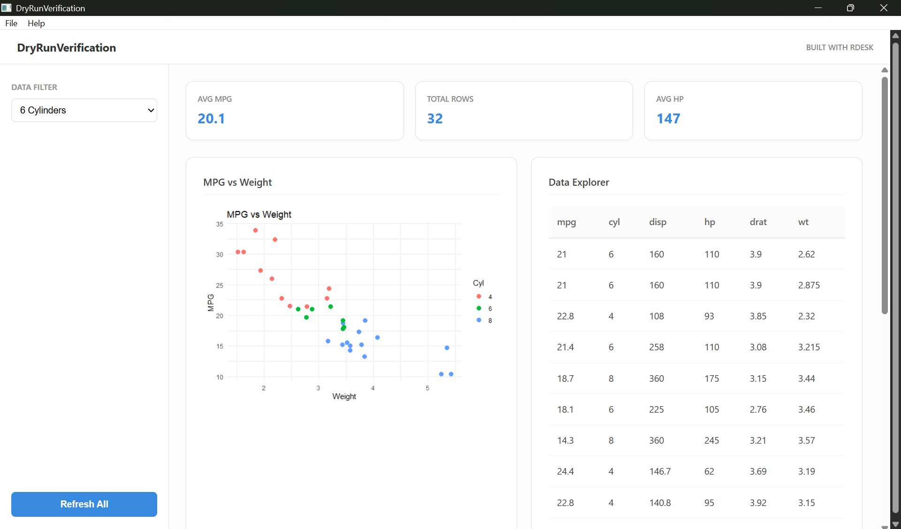

RDesk Dashboard
RDesk is a framework for building native Windows desktop applications with R. It turns your logic into a standalone .exe that runs on any machine—no R installation required by the end-user.
Quick Start
Get a professional dashboard running in seconds:
# 1. Install RDesk
devtools::install_github("Janakiraman-311/RDesk")
# 2. Create a working dashboard
RDesk::rdesk_create_app("MyDashboard")Why RDesk?
RDesk solves the “Last Mile” problem of R deployment. Instead of a browser URL, you give your users a familiar Windows tool.
| Feature | Shiny | RDesk |
|---|---|---|
| Delivery | Browser + Server | Native .exe |
| Network Ports | Yes (httpuv) | Zero (Native Pipe) |
| Offline Use | No | Yes |
| Distribution | Deploy to Cloud | Single ZIP or Installer |
| User Experience | Website-like | Desktop Native |
Who uses RDesk?
- Data analysts building internal tools that cannot live on a server
- Consultants distributing one-off analysis tools to clients
- Teams replacing Excel macros with proper R-powered apps
- Organisations that need offline, zero-IT-involvement deployment
Not the right fit for web applications, cross-platform needs, or real-time collaborative tools — use Shiny for those.
Core Benefits
- 🔒 Zero-Port IPC: Native bidirectional pipes between R and the UI. No firewall issues or port conflicts.
-
⚡ Async by Default: Built-in background task processing via
mirai. The UI never freezes, even during heavy R computations. -
📦 Portable Runtime: Packages a minimal R distribution into your
.exe. Your users don’t need to install R. - 🎨 Modern Web UI: Use HTML/JS/CSS for the interface while keeping 100% of your logic in R.
- 🛠 Professional Scaffolding: Generate dashboards with sidebar navigation, Dark Mode, and auto-wired charts in one command.
Distribute Your Work
Building a professional installer is a single command away:
RDesk::build_app(
app_dir = "MyDashboard",
app_name = "SalesTool",
build_installer = TRUE
)
# Output: dist/SalesTool-1.0.0-setup.exeLearn More
Visit the full documentation at janakiraman-311.github.io/RDesk
- Getting Started — From zero to your first native app.
- Coming from Shiny — A side-by-side guide to mapping your Shiny knowledge to RDesk.
- Async Guide — Mastering background tasks and progress overlays.
- Cookbook — Copy-paste recipes for common desktop patterns.